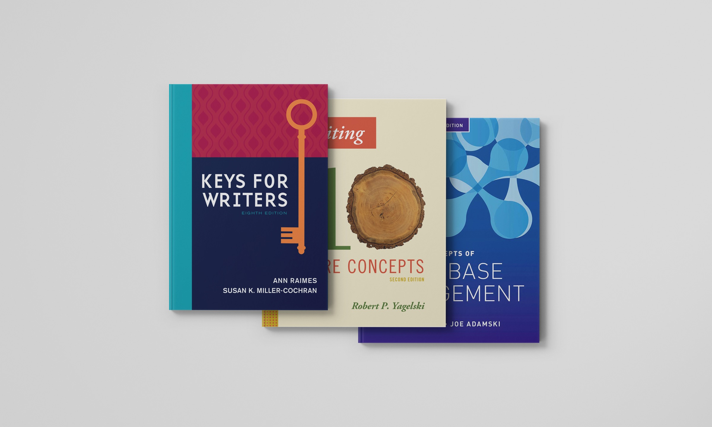

Cengage Textbook Covers
Refreshing educational design for a new generation of students
The Brief
Cengage, a global leader in educational content, releases new editions of their textbooks each year. Our team was tasked with refreshing cover designs across several disciplines — modernizing them for a contemporary student audience without losing their academic credibility.
The Work
I designed multiple cover concepts for each title, working within Cengage's established guidelines while pushing the visuals toward something fresher and more current. Each round went through team critique and client feedback, and I refined the designs accordingly.
Three of my covers were selected by the client and went to print: Keys for Writers, Writing: 10 Core Concepts, and Concepts of Database Management.

What This Makes Possible
All three covers were published and distributed nationally, reaching students across the country.
What I Took Away
Published work has a different weight
Designing for something that actually ships to hundreds of thousands of students sharpens your instincts. Every decision feels more deliberate when you know it's going to print.
Feedback is part of the process
Multiple rounds of revisions with a large client taught me how to listen, adapt, and advocate for the right design decisions without losing sight of the brief.